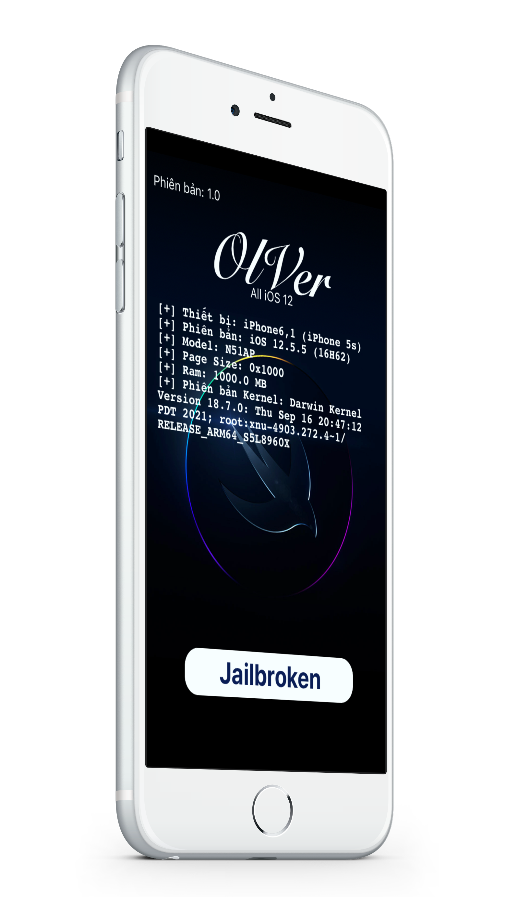

OlVer
iOS 12.4.1 - 12.5.5
bởi Hòa Huỳnh và shogunpwnd
Đây là bản phát hành đầu tiên nên vẫn còn lỗi, vui lòng báo cáo lỗi cho Hòa Huỳnh để được khắc phục sớm nhất và mang đến trải nghiệm ổn định nhất.
Cập nhật
V1.0:- Phát hành. V1.1:- Cập nhật amfid mới.- Cập nhật bootstrap.- Cải cải thiện độ ổn định Substitute.- Cập nhật Zebra thay thế cho Cydia. V1.1-1:- Sửa lỗi Zebra.